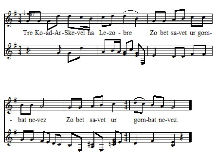

Lezobre - Version 1 - Mélodie 1
Texte recueilli auprès de Marie DANIEL, commune de DuaultPublié par François-Marie Luzel dans "Gwerzioù Breizh-Izel" en 1868

Mélodie
Air publié dans "Musiques bretonnes" par Maurice Duhamel
Recueiili auprès de Marguerite Philippe de Pluzunet,
Enregistrée par François Vallée.
Arrangement Christian Souchon (c) 2008
Source: le site de M.Quentel, "Son ha ton" (voir "Liens")
LEZOBRE I 'Tre Koat-ar-Skevel ha Lezobre A zo zavet ur gombat newe; (bis) Ar re-ze deuz zavet ur gombat, Doue da reï d'ez-he kombat vad ! (bis) Doue da reï d'ez-he kombat vad, Ha d'ho zud er ger kezelou mad ! (bis) Markiz Lezobre a lavare D'he baj-bihan, un dez a oe : - Dibres-te d'in-me ma inkane, Ma ez inn da ober ur bale; Laka ur brid arc'hant en he benn, Hag un dibr alaouret war he gein ; Hag un dibr alaouret war he gein, Houarn he daou-droad en aour-melenn ; En aour melenn vezo houarnet, Wit mont da Zantes-Anna Vened. - II Ann aotro Lezobre a lare, En Zantes-Anna pa arrue : - Demad, itron santes Anna Vened, Me zo deut iaouankik d'ho kwelet; N'am euz ket tric'houec'h vloaz achuet, Hag en tric'houec'h kombat ez on bet ; Hag ho zric'houec'h am euz goneet, Dre ho kraz Santes Anna Vened ; Grit d'in c'hoaz gonit ann naontekvet, Ha me a rei dac'h hanter-kant skoed; Ia, hanter-kant skoed en arc'hant gwenn, Hab ur c'hement-all en aour-melenn ; Ha c'hoaz a rinn dac'h un donezon A vezo kaer da dez ho pardon ; Me a roïo dac'h ur groaz aour-finn , Ar c'haera vezo en foar Kintinn ; Me a roïo dac'h un tabernek Hag ur zakramant holl alaouret ; Ouspenn a rinn dac'h ur groaz arc'hant, Hag un esensouer hag ul lamp ; C'hoaz a roïnn dac'h ur baniel-gwenn, A vo seiz kloc'h arc'hant ouz he benn ; A vo seiz kloc'h arc'hant ouz he benn Hag un troad balenn wit hen dougenn; Habillamant wit ho seiz aoter, Hag un oferenn-bred bep gwener : C'hoaz a roïnn dac'h ur c'houriz koar, Hag a raïo ter zro d'ho mogoar ; A raïo ter zro en dro d'ho ti, Ha dont da skoulmo d'ar marchepi. - Na oa ket he c'hir peur-lavaret, Ma komzaz santes Anna Vened : - Kerz d'ar gombat, 'me-z-hi, Lezobre, Me a vo eno kerkent ha te. - III 'Nn aotro Koat-ar-Skevel 'c'houlenne Digant Lezobre, un dez a oe : - Demad larann dide, Lezobre; Da unan out-te deut d'ann arme? - - N'euz deut nemet-on da gombati, Nemet ma fajik bihan ha mi; Nemet ma fajik bihan ha mi, Ha Doue hag ar Werc'hes Vari ; Ar Werc'hes Vari benniget, Hag 'nn itron santes Anna Vened ! - - Lizeriou am euz digant ar roue, Na ewit da laza, Lezobre. - - Mar 'c'h euz lizeriou digant ar roue, Roït d'inn, ma lenninn ann ez-he. - - Distera zoudard ' zo em bandenn, N'ho rofe ket da ur seurt azenn ! - - Wit mar d'on-me azenn, a dra-sur, Me na onn ket, azenn dre natur; Me na on ket azenn dre natur, Ma zad a lareur oa un den fur. - - Kent wit ma 'z i-te euz al lec'h-me, Me ouïo hag eo gwir kement-se. - Na oa ket ar gir peurlavaret, Koat-ar-Skevel hen euz douaret; Koat-ar-Skevel hen euz douaret, Hag hanter-kant euz he zoudarded. He baj bihan a zo en tu-all, A ra iwe mui, pe gement-all. Koat-ar-Skevel a lavare Da varkiz Lezobre eno neuze : - Te skrivfe ewit-on ul lizer, Da gass d'am fried, a zo er ger ? Da gass d'am fried, d'am bugale, Da laret 'vo marw ho zad en arme ? Rag ma bugale ve disenoret 'Klewet vo ganid 'm bo kombatet; 'Klewet vo ganid 'm bo kombatet, Na p'am euz-me ar gombat kollet ! -- |
RAPPROCHEMENT AVEC BARZHAZ 71. Etre Lorgnez ha marc'heg Lez-Breizh A zo bet tonket un emgann reizh 72.Doue da ray gounid d'ar Breizhad Ha d'ar re zo er gêr keloù mat ! 73.An aotrou Lez-Breiz a lavare D'e floc'hig yaounak, un deiz a oe : 74."Dihun, va floc'h, ha sav alese Ha kae da spuran din va c'hleze 75.Va zok-houarn, va goaf ha va skoed D'o ruziañ e gwad ar C'hallaoued 85.Santez Anna 'r vor pa erruas Tre 'barzh he iliz eñ a yeas 86."Itron Santez Anna benniget Yaouankik e teuis d'ho kwelet 87.Ne oan ket ugent vloaz achuet Hag e ugent stourmad e oan bet 88.Hag o holl hon eus o gounezet Dre ho kennerzh, itron benniget 89.Mard an me c'hoazh war va c'hiz d'ar vro Mamm Santez Anna, me ho kopro 92.Hag ur banniel voulouz-satin-gwenn Un troad olifant flour d'he dougen 93.Hag seizh kloc'h arc'hant a roin ouzhpenn A gano ge, noz-deiz, war ho penn 94.Ha teir gwech ez in war va daoulin Da gerc'hat dour evit ho pinsin 90.Me a royo deoc'h ur gouriz koar A ray teir zro en-dro d'ho moger 91.Ha teir d'hoc'h iliz, teir d'ho pered Ha teir d'ho touar, pa vin degoue'et 95.- Kae d'an emgann, kae, marc'heg Lez-Breizh Mont a ran-me ganeout-te ivez" 105."Ha ! demad dit-te, marc'heg Lez-Breizh - Ha ! demad dit-te, marc'heg Lorgnez 106.- Ha deut out da-unan d'an emgann ? - N'on ket deut d'an emgann ma-unan 98.Hag ur floc'h bihan en e gichen Hag eñ, hervez e vrud, ur gwall zen" 107.D'an emgann ma-unan ned an ket Santez Anna zo ganin kevred 108.- Dont a ran-me a-berzh va roue Da lemel diganit da vuhez 109.- Kae war da c'hiz ! lavar d'az roue Me ra fae outañ, 'vel a'nout-te 114.Disterañ mevel zo em bandenn A lemfe ho tok diwar ho penn" 96."Klevet-hu 'mañ Lez-Breizh o tonet Gantañ ur strollad, hag eñ fardet ! 116."Ma ne t'eus ket anave'et an tad Me ray dit anaout ar mab anat !" 122.Trizek soudard lazhet dindanañ Marc'heg Lorgnez lazhet da gentañ ! 123.Ha n'em eus diskaret kement-all Lammout kuit o deus graet ar re all" |
TRADUCTION LES AUBRAYS I Entre Koat-ar-Skevel et Lezobre , S'est élevé un combat nouveau; Ceux-là ont élevé un combat, Que Dieu leur donne bon combat ! Que Dieu leur donne bon combat, Et à leurs parents, à la maison, bonne nouvelle! Le marquis de Lezobre disait, Un jour, à son petit page : - Selle-moi ma haquenée, Que j'aille faire une promenade; Mets-lui une bride d'argent en tête, Et une selle dorée sur le dos; Et une selle dorée sur le dos, Aux deux pieds des fers d'or jaune; Elle sera ferrée d'or jaune, Pour aller à Sainte-Anne de Vannes. (2) - II Le seigneur Lezobre disait, En arrivant à Sainte-Anne : - Bonjour, madame sainte Anne, Je suis venu bien jeune vous voir; Je n'ai pas dix-huit ans accomplis Et pourtant j'ai pris part à dix-huit combats; Et je les ai tous gagnés, Grâces à vous, sainte Anne de Vannes; Faites-moi encore gagner le dix-neuvième, Et je vous donnerai cinquante écus; Oui, cinquante écus, en argent blanc, Et autant en or jaune; Je vous ferai de plus un présent, Qui sera beau le jour de votre pardon ; Je vous donnerai une croix d'or fin, La plus belle qui sera à la foire de Quintin; Je vous donnerai un tabernacle (un dai), Et un sacrement (ostensoir) tout d'or; Je vous donnerai encore une croix d'argent, Avec un encensoir et une lampe; Je vous donnerai encore une bannière blanche, Avec sept clochettes d'argent à son extrémité; Avec sept clochettes d'argent à son extrémité, Et une tige de baleine pour la porter; Garnitures pour vos sept autels, Et une grande messe chaque vendredi : Je vous donnerai encore une ceinture de cire Qui fera trois tours à votre muraille; Qui fera trois fois le tour de votre maison, Et viendra se nouer au marchepied (de l'autel). - Il n'avait pas fini de parler, Que sainte Anne de Vannes prit la parole : - Va au combat, dit-elle, Les Aubrays, Je serai là aussitôt que toi! - III Le seigneur de Koat-ar-Skevel demandait, Un jour, à Les Aubrays : - Je te souhaite le bonjour, Les Aubrays ; Es-tu venu seul au combat? - - Il n'est venu que moi pour combattre, Il n'est venu que mon petit page et moi; Il n'est venu que mon petit page et moi, Et Dieu et la Vierge Marie; La Vierge Marie bénie, Et madame sainte Anne de Vannes! - - J'ai des lettres de la part du roi, Pour te tuer, Les Aubrays. - - Si vous avez des lettres de la part du roi, Donnez-les moi, pour que je les lise. - - Le moindre soldat de ma troupe Ne les donnerait pas à un âne comme toi! - - Si je suis âne, bien certainement, Je ne suis pas âne de nature; Je ne suis pas âne de nature, Mon père était, dit-on, un homme sage. - - Avant que tu t'en ailles de là, Je saurai si cela est vrai. - Il n'avait pas fini de parler, Qu'il a étendu Koat-ar-Skevel à terre; Il a étendu Koat-ar-Skevel à terre, Ainsi que cinquante de ses soldats. Son petit page est de l'autre côté, Et en fait autant, ou davantage. Koat-ar-Skevel disait Au marquis de Les Aubrays, en ce moment : - Voudrais-tu m'écrire une lettre, Pour l'envoyer à ma femme, qui est à la maison? Pour l'envoyer à ma femme et à mes enfants, Pour leur dire que leur père sera mort à l'armée ? Car mes enfants seraient déshonorés, S'ils savaient que je t'ai combattu; S'ils savaient que je t'ai combattu, Puisque j'ai perdu le combat! - Notes de Luzel (1) Les Aubrays, nom d'une seigneurie de la maison de Retz, apportée en mariage, en 1455, à Rolland de Lannion, par Guyonne de Grezy, dame des Aubrays. (2) Sainte-Anne d'Auray. |

Les Aubrays -Version 2 - Mélodie 2
Les Aubrays -Version 3 - Mélodie 3
Les Aubrays -Version 3 - Mélodie 4
Les Aubrays -Version 4 - Mélodie 2
Les Aubrays -Version 5 - Mélodie 4
Les Aubrays -Versions Penguern
Retour à "Lez-Breizh" du Bazhaz Breizh